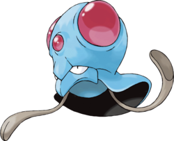

Recherche
Tentacruel - 073
Nom Anglais : Tentacruel
Nom Original : Dokukurage, ドククラゲ
Génération : Première
Type : Eau Poison
Catégorie : Pokémon Mollusque
Sexe : Femelle : 50% | Mâle : 50%
Description : Tentacruel a l'apparence générale d'une méduse. Sa tête est protégée par un crâne en triangle duquel ressortent deux grandes sphères rouges ainsi qu'une troisième plus petite sur le front. De son corps rond et noir dépasse un large bec bleu, propriété plutôt reprise des pieuvres. Le nombre des tentacules gris-vert varie régulièrement sur les illustrations de ce Pokémon. On en compte souvent entre dix et vingt, bien que les définitions du Pokédex en rapportent un total de quatre-vingts.
Tentacool - 072
Tentacruel - 073